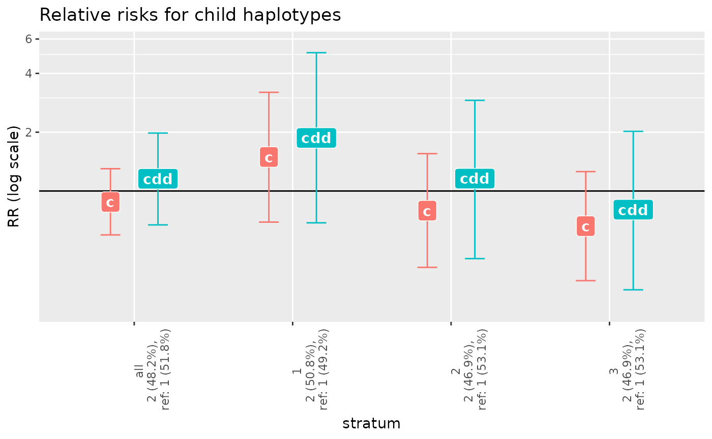
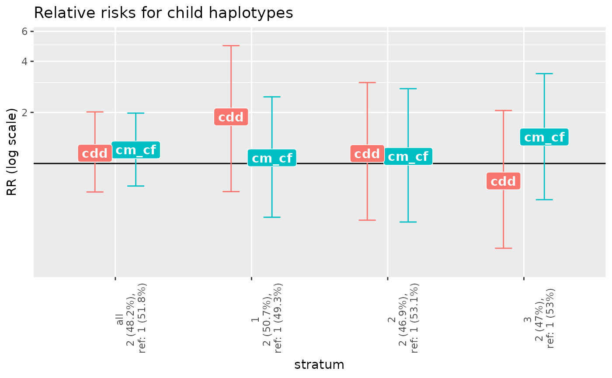

This vignette will show you how to run the interaction analyses using Haplin package.
First, we need to read two datasets: DNA methylation and genotype. We’ll use simulated data here.
library(HaplinMethyl)
#> Loading required package: Haplin
ex_path <- system.file("extdata", package = "HaplinMethyl")
ex_file <- "env_data_test.dat"
ex_out_file <- "dnam_ex"
dnam_ex <- envDataRead(
file.in = ex_file,
dir.in = ex_path,
file.out = ex_out_file,
sep = " ",
overwrite = TRUE
)
#> The output file(s) exist!
#> Reading the data in chunks...
#> -- chunk 1--
#> -- chunk 2--
#> ... done reading.
#> Preparing data...
#> ... done preparing
#> Saving data...
#> ... saved to file: ./dnam_ex_env.ffData
ex_gen_file <- "sim1"
gen_ex <- genDataLoad(
filename = ex_gen_file,
dir.in = ex_path
)Let’s take a look at it
dnam_ex
#> This is continuous environmental data read in by 'envDataRead'
#> with 400 columns
#> and 200 rows.
showRaw(dnam_ex)
#> opening ff /tmp/RtmpDbDIRL/ff/ff44bd96beff9.ff
#> cg1 cg2 cg3 cg4 cg5
#> id1 0.2045598 0.38376996 0.76001042 0.8731273 0.7625753
#> id2 0.2593365 0.41689855 0.94649631 0.9673046 0.4619886
#> id3 0.9912362 0.91398561 0.07621296 0.3841574 0.7026818
#> id4 0.4740415 0.04124038 0.56624919 0.4589275 0.4461102
#> id5 0.7989879 0.52987689 0.66167605 0.1056240 0.3917910
#> attr(,"Csingle")
#> [1] TRUE
gen_ex
#> This is raw genetic data read in through genDataRead.
#>
#> It contains the following parts:
#> cov.data, gen.data, aux
#>
#> with following dimensions:
#> - covariate variables = cov.1
#> (total 1 covariate variables),
#> - number of markers = 1 ,
#> - number of data lines = 200
showGen(gen_ex)
#> Warning in showGen(gen_ex): It appears that your data has less markers (1) than
#> requested (5), adjusting accordingly.
#> opening ff /tmp/RtmpDbDIRL/ff/tmp/RtmpekQIls/ff/ff164011e6d830.ff
#> ff (open) byte length=30 (30) dim=c(5,6) dimorder=c(1,2) levels: 1 2
#> l_m1_a_m l_m1_b_m l_m1_a_f l_m1_b_f l_m1_a_c l_m1_b_c
#> [1,] 1 1 2 1 1 1
#> [2,] 1 1 2 2 2 1
#> [3,] 1 2 1 1 1 2
#> [4,] 1 1 2 2 2 1
#> [5,] 1 2 2 2 2 1The genotype in the example is coded as 1 and 2 instead of a specific base letter (e.g., A and T, or A and C) and there is only one marker. The order of the columns is as follows: maternal allele 1 (A1), maternal A2, paternal A1, paternal A2, child’s A1, and child’s A2.
Let’s assume that we know that the first three methylation sites are near the marker that is in the genotype dataset. Thus, we need to extract those methylation sites first.
dnam_ex_subset <- envDataSubset(
env.data = dnam_ex,
col.ids = 1:3,
file.out = "dnam_subset"
)
#> Will select 3 columns.
#> Saving data...
#> ... saved to files: ./dnam_subset_gen.ffData, ./dnam_subset_gen.RData
dnam_ex_subset
#> This is continuous environmental data read in by 'envDataRead'
#> with 3 columns
#> and 200 rows.Next, let’s create one variable that gives division of the samples into strata based on the summarized methylation level over the three chosen methylation sites.
dnam_ex_cat <- envDataCategorize(
env.data = dnam_ex_subset,
breaks = 3,
file.out = "dnam_cat"
)
#> opening ff /tmp/RtmpDbDIRL/ff/ff44bd59f1510f.ff
#> Creating categories: 1,2,3
#> Saving data...
#> ... saved to file: ./dnam_cat_gen.ffData
dnam_ex_cat
#> This is categorical environmental data read in by 'envDataRead'
#> with 1 columns
#> and 200 rows.
showRaw(dnam_ex_cat)
#> opening ff /tmp/RtmpDbDIRL/ff/ff44bd110a5741.ff
#> [,1]
#> id1 2
#> id2 2
#> id3 3
#> id4 1
#> id5 3
#> attr(,"vmode")
#> [1] byte
#> Levels: 1 2 3Now, the strata variable needs to be added to the genotype dataset.
NB: be careful to check that the order of the samples is the same in the stratified DNA methylation data as in the genotype data!
new_strata <- showRaw(dnam_ex_cat, rows = 1:nrows(dnam_ex_cat))
gen_ex_strat <- addCovar(
data.in = gen_ex,
covar = new_strata,
c.name = "dnam_c"
)
gen_ex_strat
#> This is raw genetic data read in through genDataRead.
#>
#> It contains the following parts:
#> cov.data, gen.data, aux
#>
#> with following dimensions:
#> - covariate variables = cov.1, dnam_c
#> (total 2 covariate variables),
#> - number of markers = 1 ,
#> - number of data lines = 200
showPheno(gen_ex_strat)
#> cov.1 dnam_c
#> id1 "1" "2"
#> id2 "1" "2"
#> id3 "1" "3"
#> id4 "1" "1"
#> id5 "1" "3"Haplin requires pre-processing of the genotype data before any analysis can be made.
gen_ex_strat_prep <- genDataPreprocess(
data.in = gen_ex_strat,
file.out = "gen_strat_prep"
)
#> Reading the marker names...
#> Warning: No map file given, map file empty or the number of map file rows not
#> equal to the number of markers in data; will generate dummy marker names.
#> ...done
#> Recoding covariate data...
#> ...done
#> Recoding genetic data (no. of loci: 1)...
#> ...running on only one CPU core! This may take some time...
#> ...checking alleles per SNP...
#> ...done, all alleles: 1 2
#> ...recoding SNPs...
#> ...done
#> Saving data...
#> ... saved to files: ./gen_strat_prep_gen.ffData , ./gen_strat_prep_gen.RData
gen_ex_strat_prep
#>
#> This is preprocessed data, ready for haplin analysis.
#>
#> It contains the following parts:
#> cov.data, gen.data, aux
#>
#> with following dimensions:
#> - number of covariate variables = 2 , - number of markers = 1 , - number of individuals/families = 200Finally, we can run the analysis by using haplinStrat
g_x_me_results <- haplinStrat(
data = gen_ex_strat_prep,
strata = 2
)
#>
#> ## Running haplinStrat ##
#>
#> Selected stratification variable: dnam_c.c
#> Frequency distribution of stratification variable:
#> 1 2 3
#> 67 66 67
#>
#> Running Haplin on full data file...
#> opening ff /tmp/RtmpDbDIRL/ff/ff44bd11e51902.ff
#> Done
#>
#> Running Haplin on stratum "1"...Done
#>
#> Running Haplin on stratum "2"...Done
#>
#> Running Haplin on stratum "3"...DoneThe resulting object is a list of results, with estimates per stratum and for pooled sample.
names(g_x_me_results)
#> [1] "all" "1" "2" "3"
g_x_me_results$all
#> This is the result of a haplin run.
#> Number of data lines used: 200 | Number of haplotypes used: 2
#> Please use the "summary", "plot", "haptable" or "output" functions to obtain
#> more details.
haptable(g_x_me_results)
#> stratum row.str marker alleles counts HWE.pv Original After.rem.NA
#> 1 all 1 m1 1/2 607/593 0.3708224 200 200
#> 2 all 2 <NA> <NA> <NA> NA 200 200
#> 3 1 1 m1 1/2 178/224 0.4912064 67 67
#> 4 1 2 <NA> <NA> <NA> NA 67 67
#> 5 2 1 m1 1/2 206/190 0.6861466 66 66
#> 6 2 2 <NA> <NA> <NA> NA 66 66
#> 7 3 1 m1 1/2 223/179 0.1415450 67 67
#> 8 3 2 <NA> <NA> <NA> NA 67 67
#> After.rem.Mend.inc. After.rem.unused.haplos pv.overall haplos haplofreq
#> 1 200 200 0.3249067 1 0.5179964
#> 2 200 200 0.3249067 2 0.4820036
#> 3 67 67 0.4425462 1 0.4919781
#> 4 67 67 0.4425462 2 0.5080219
#> 5 66 66 0.4570745 1 0.5312395
#> 6 66 66 0.4570745 2 0.4687605
#> 7 67 67 0.3942638 1 0.5309012
#> 8 67 67 0.3942638 2 0.4690988
#> haplofreq.lower haplofreq.upper reference RR.est. RR.lower RR.upper
#> 1 0.4683542 0.5664903 ref 1.0000000 1.0000000 1.000000
#> 2 0.4335097 0.5316458 - 0.8788893 0.5972586 1.300834
#> 3 0.4080047 0.5767633 ref 1.0000000 1.0000000 1.000000
#> 4 0.4232367 0.5919953 - 1.4932158 0.6929969 3.201399
#> 5 0.4447807 0.6145346 ref 1.0000000 1.0000000 1.000000
#> 6 0.3854654 0.5552193 - 0.7923367 0.4070791 1.554546
#> 7 0.4449059 0.6127846 ref 1.0000000 1.0000000 1.000000
#> 8 0.3872154 0.5550941 - 0.6588865 0.3463119 1.259176
#> RR.p.value RRdd.est. RRdd.lower RRdd.upper RRdd.p.value
#> 1 NA 1.0000000 1.0000000 1.000000 NA
#> 2 0.5169169 1.1562777 0.6731963 1.979085 0.6052218
#> 3 NA 1.0000000 1.0000000 1.000000 NA
#> 4 0.2970941 1.8696232 0.6871265 5.107933 0.2111747
#> 5 NA 1.0000000 1.0000000 1.000000 NA
#> 6 0.4973229 1.1586112 0.4549026 2.909822 0.7646181
#> 7 NA 1.0000000 1.0000000 1.000000 NA
#> 8 0.2030811 0.8024719 0.3125718 2.007631 0.6365470
plot(g_x_me_results)
To check the significance of the interaction, we need to use gxe function
gxe(g_x_me_results)
#> gxe.test chisq df pval
#> 1 haplo.freq 0.5026134 2 0.7777838
#> 2 child 2.9488102 4 0.5664281
#> 3 haplo.freq.trend 0.3731476 1 0.5412935
#> 4 child.trend 2.6559459 2 0.2650139The p-values here show that the interaction was not significant.
Similarly, we can also check for interaction between the methylation level and parent-of-origin effect of the genetic marker.
poo_x_me_results <- haplinStrat(
data = gen_ex_strat_prep,
strata = 2,
poo = TRUE
)
#> Warning: Can only (for the time being) use reference = "ref.cat" or "population"
#> when poo == TRUE. Has been changed to "ref.cat".
#>
#> ## Running haplinStrat ##
#>
#> Selected stratification variable: dnam_c.c
#> Frequency distribution of stratification variable:
#> 1 2 3
#> 67 66 67
#>
#> Running Haplin on full data file...Done
#>
#> Running Haplin on stratum "1"...Done
#>
#> Running Haplin on stratum "2"...Done
#>
#> Running Haplin on stratum "3"...Done
haptable(poo_x_me_results)
#> stratum row.str marker alleles counts HWE.pv Original After.rem.NA
#> 1 all 1 m1 1/2 607/593 0.3708224 200 200
#> 2 all 2 <NA> <NA> <NA> NA 200 200
#> 3 1 1 m1 1/2 178/224 0.4912064 67 67
#> 4 1 2 <NA> <NA> <NA> NA 67 67
#> 5 2 1 m1 1/2 206/190 0.6861466 66 66
#> 6 2 2 <NA> <NA> <NA> NA 66 66
#> 7 3 1 m1 1/2 223/179 0.1415450 67 67
#> 8 3 2 <NA> <NA> <NA> NA 67 67
#> After.rem.Mend.inc. After.rem.unused.haplos pv.overall haplos haplofreq
#> 1 200 200 0.4215675 1 0.5176676
#> 2 200 200 0.4215675 2 0.4823324
#> 3 67 67 0.6427490 1 0.4930795
#> 4 67 67 0.6427490 2 0.5069205
#> 5 66 66 0.6552084 1 0.5308702
#> 6 66 66 0.6552084 2 0.4691298
#> 7 67 67 0.4587525 1 0.5302072
#> 8 67 67 0.4587525 2 0.4697928
#> haplofreq.lower haplofreq.upper reference RRcm.est. RRcm.lower RRcm.upper
#> 1 0.4700792 0.5670512 ref 1.0000000 1.0000000 1.000000
#> 2 0.4329488 0.5299208 - 0.9544270 0.6137472 1.511417
#> 3 0.4078670 0.5757597 ref 1.0000000 1.0000000 1.000000
#> 4 0.4242403 0.5921330 - 1.5606351 0.6593474 3.661163
#> 5 0.4479463 0.6150836 ref 1.0000000 1.0000000 1.000000
#> 6 0.3849164 0.5520537 - 0.8267190 0.3738303 1.870074
#> 7 0.4480859 0.6138420 ref 1.0000000 1.0000000 1.000000
#> 8 0.3861580 0.5519141 - 0.7716568 0.3761164 1.625104
#> RRcm.p.value RRcf.est. RRcf.lower RRcf.upper RRcf.p.value RRcm_RRcf.est.
#> 1 NA 1.0000000 1.0000000 1.000000 NA 1.000000
#> 2 0.8579539 0.7953424 0.4995210 1.289259 0.3484999 1.202425
#> 3 NA 1.0000000 1.0000000 1.000000 NA 1.000000
#> 4 0.3100549 1.4407954 0.6019219 3.440700 0.4240687 1.080438
#> 5 NA 1.0000000 1.0000000 1.000000 NA 1.000000
#> 6 0.6510574 0.7508834 0.3337436 1.712289 0.5004946 1.100715
#> 7 NA 1.0000000 1.0000000 1.000000 NA 1.000000
#> 8 0.4954824 0.5381458 0.2415788 1.232018 0.1409641 1.432857
#> RRcm_RRcf.lower RRcm_RRcf.upper RRcm_RRcf.p.value RRdd.est. RRdd.lower
#> 1 1.0000000 1.000000 NA 1.0000000 1.0000000
#> 2 0.7361186 1.981824 0.4619789 1.1487113 0.6781981
#> 3 1.0000000 1.000000 NA 1.0000000 1.0000000
#> 4 0.4823310 2.468996 0.8399792 1.8820947 0.6829190
#> 5 1.0000000 1.000000 NA 1.0000000 1.0000000
#> 6 0.4520536 2.759066 0.8271603 1.1445511 0.4635546
#> 7 1.0000000 1.000000 NA 1.0000000 1.0000000
#> 8 0.6120656 3.383351 0.4057060 0.7890665 0.3166753
#> RRdd.upper RRdd.p.value
#> 1 1.00000 NA
#> 2 2.00181 0.5993433
#> 3 1.00000 NA
#> 4 4.94472 0.2225700
#> 5 1.00000 NA
#> 6 2.99761 0.7579938
#> 7 1.00000 NA
#> 8 2.05191 0.6357477
plot(poo_x_me_results)
gxe(poo_x_me_results)
#> gxe.test chisq df pval
#> 1 haplo.freq 0.5026134 2 0.7777838
#> 2 poo 0.2626489 2 0.8769332
#> 3 haplo.freq.trend 0.3731476 1 0.5412935
#> 4 poo.trend 0.2175134 1 0.6409412